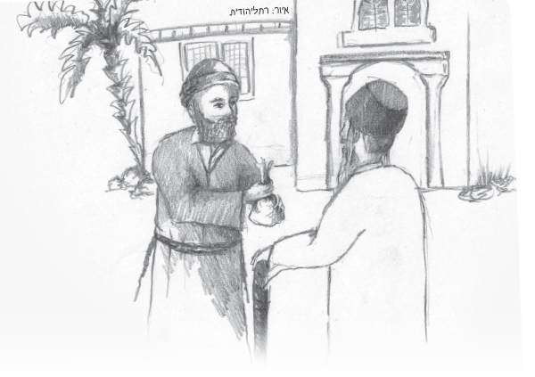

A Special “Tikkun”
In the home of Matzliach, an antique seller who lived in Tunisia, the days before Shavuos were eagerly counted. True, all Jews count the days of S’firas HaOmer, but Matzliach truly felt a longing for Shavuos, the incredible holiday when we received the holy Torah.
Presented for Shavuos
By Nechama Bar

Matzliach was not a great scholar but he loved the Torah and Torah scholars. He made generous monetary donations to them. When Shavuos began, the holiday he loved so much, he invited poor Torah scholars to his home to recite the Tikkun Leil Shavuos. They learned Torah all night and Matzliach provided them with bountiful refreshments so they would not tire. He piled the tables with cakes, juicy fruits and beverages. This is what he did every year for many years.
One year, Matzliach was not very matzliach (successful). It reached the point that he barely managed to obtain bread for his family to fill their stomachs.
Shavuos was approaching and there was no money in his house for even a meal for his own family. What about his annual tradition? Would he be unable to invite the Torah scholars to his home? Matzliach could not bear the thought.
Mazal, his righteous wife, took action. She gave him her jewelry and said, “Matzliach, take this and sell it.”
Matzliach was greatly distressed over his wife having to sacrifice her precious jewelry.
“Don’t be upset,” Mazal reassured him. “This is surely a test from Hashem. Go and pawn these items and with Hashem’s help we will merit salvation and will be able to buy even nicer jewelry.”
There was no other choice. Matzliach went and sold the jewelry. He left the store with a bag full of coins. He thought, now I will be able to buy what we need for Yom Tov and even invite the Torah scholars to the Tikkun Leil Shavuos.
“Hello Matzliach. I am happy to meet you. I was just on my way to see you. We need a large sum of money to redeem captives. Surely you can give us a generous donation …” It was the rav of Tunisia, R’ Yitzchok Tayeb, who would occasionally raise money for the needy. R’ Yitzchok did not know that Matzliach’s financial situation had deteriorated. Matzliach did not think of telling the rav. He unhesitatingly handed over the bag of coins and said, “Thank you for including me in this great mitzva.”
R’ Yitzchok happily departed with blessings that Matzliach merit additional mitzvos and success. Now, Matzliach stood there empty-handed and heavy-hearted. How could he return home? What would he tell his wife?
He was still pondering this when he felt a tap on his shoulder. It was Suleiman, a close friend of the sultan. “Matzliach, how good it is to see you. I saved myself a trip to your house. Listen my friend, I urgently need antique coffee cups for the sultan. They must be unique, one of a kind. If you are able to find something that pleases the sultan,” he winked, “you can be sure you won’t regret it. You will be paid handsomely.”
“I will make every effort, Suleiman,” promised Matzliach. Suleiman went on his way and Matzliach immediately began his search. He knew all the antique dealers and he went from one to the next until he found exquisite coffee cups. It was truly a unique set. Matzliach felt that this was precisely what the sultan wanted. These cups had sat in the store for a long time with no customer and the storekeeper asked for a sum that wasn’t that high.
“I do not have the money at the moment,” he said. “If I am able to sell the cups, I will pay you for them; if not, I will return them to you.” The storekeeper, who knew that Matzliach was an honest man, immediately agreed.
Matzliach rushed to the palace with the precious cups as he murmured a prayer that they find favor in the sultan’s eyes. To his delight, the sultan’s face lit up when he saw the cups. “They are just what I had in mind,” he said and asked how much they cost. When he heard the low price, the sultan told the treasurer, “I won’t buy them cheaply. Pay him three times the amount he said.”
Then the sultan jovially turned to Matzliach and asked him, “I know that you Jews are busy getting ready for your holiday. I thank you for setting aside time for me. Tell me, how do you prepare for the holiday?”
“Your majesty, unfortunately I have not begun my preparations … I don’t even have money with which to buy what I need for the holiday. This year was a very hard year and I was not successful in business.”
“If so,” said the sultan, “I will help you with the preparations. You will see that you will have an especially joyous holiday!” He instructed his servants to send a carriage over to Matzliach’s house with a sack full of fine flour, a pitcher of olive oil and two lambs.
“This is my holiday gift,” explained the sultan smilingly.
Matzliach was happy. He felt that it was in the merit of the mitzva of redeeming captives that heaven had had mercy on him. Before walking home, he stopped off at the antique dealer in order to pay him. Then he went to the jewelry store where he bought back his wife’s jewelry plus a new item in honor of Yom Tov. From there he went to buy refreshments for the poor Torah scholars who would be coming to his house to recite Tikkun Leil Shavuos. Then, with his hands full of packages, he headed for home.
Mazal welcomed him warmly. The kitchen was full of good smells. She had begun baking cakes and challa. She excitedly told him about the sultan’s servants who had come with gifts and Matzliach told her everything that had happened.
In honor of the wondrous divine providence they had experienced, Matzliach invited many guests, more than usual, to join them for the holiday meal. That night, the house was full of Torah scholars who learned Torah with exceptional enthusiasm and joy.
Beis Moshiach (staff). "A Special “Tikkun”." Beis Moshiach, no. 928 (May 28, 2014).